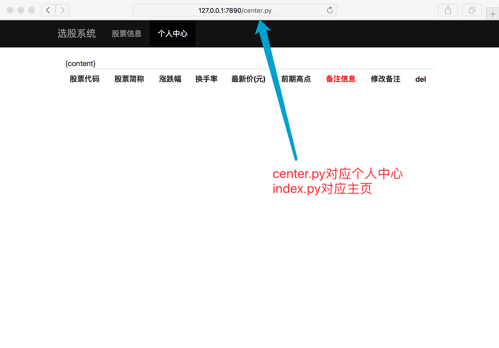

mini web框架-2-显示页面
dynamic/my_web.py (更新)
import time
import os
template_root = "./templates"
def index(file_name):
"""返回index.py需要的页面内容"""
# return "hahha" + os.getcwd() # for test 路径问题
try:
file_name = file_name.replace(".py", ".html")
f = open(template_root + file_name)
except Exception as ret:
return "%s" % ret
else:
content = f.read()
f.close()
return content
def center(file_name):
"""返回center.py需要的页面内容"""
# return "hahha" + os.getcwd() # for test 路径问题
try:
file_name = file_name.replace(".py", ".html")
f = open(template_root + file_name)
except Exception as ret:
return "%s" % ret
else:
content = f.read()
f.close()
return content
def application(environ, start_response):
status = '200 OK'
response_headers = [('Content-Type', 'text/html')]
start_response(status, response_headers)
file_name = environ['PATH_INFO']
if file_name == "/index.py":
return index(file_name)
elif file_name == "/center.py":
return center(file_name)
else:
return str(environ) + '==Hello world from a simple WSGI application!--->%s\n' % time.ctime()
web_server.py (更新)
import select
import time
import socket
import sys
import re
import multiprocessing
class WSGIServer(object):
"""定义一个WSGI服务器的类"""
def __init__(self, port, documents_root, app):
# 1. 创建套接字
self.server_socket = socket.socket(socket.AF_INET, socket.SOCK_STREAM)
# 2. 绑定本地信息
self.server_socket.setsockopt(socket.SOL_SOCKET, socket.SO_REUSEADDR, 1)
self.server_socket.bind(("", port))
# 3. 变为监听套接字
self.server_socket.listen(128)
# 设定资源文件的路径
self.documents_root = documents_root
# 设定web框架可以调用的函数(对象)
self.app = app
def run_forever(self):
"""运行服务器"""
# 等待对方链接
while True:
new_socket, new_addr = self.server_socket.accept()
# 创建一个新的进程来完成这个客户端的请求任务
new_socket.settimeout(3) # 3s
new_process = multiprocessing.Process(target=self.deal_with_request, args=(new_socket,))
new_process.start()
new_socket.close()
def deal_with_request(self, client_socket):
"""以长链接的方式，为这个浏览器服务器"""
while True:
try:
request = client_socket.recv(1024).decode("utf-8")
except Exception as ret:
print("========>", ret)
client_socket.close()
return
# 判断浏览器是否关闭
if not request:
client_socket.close()
return
request_lines = request.splitlines()
for i, line in enumerate(request_lines):
print(i, line)
# 提取请求的文件(index.html)
# GET /a/b/c/d/e/index.html HTTP/1.1
ret = re.match(r"([^/]*)([^ ]+)", request_lines[0])
if ret:
print("正则提取数据:", ret.group(1))
print("正则提取数据:", ret.group(2))
file_name = ret.group(2)
if file_name == "/":
file_name = "/index.html"
# 如果不是以py结尾的文件，认为是普通的文件
if not file_name.endswith(".py"):
# 读取文件数据
try:
print(self.documents_root+file_name)
f = open(self.documents_root+file_name, "rb")
except:
response_body = "file not found, 请输入正确的url"
response_header = "HTTP/1.1 404 not found\r\n"
response_header += "Content-Type: text/html; charset=utf-8\r\n"
response_header += "Content-Length: %d\r\n" % (len(response_body))
response_header += "\r\n"
response = response_header + response_body
# 将header返回给浏览器
client_socket.send(response.encode('utf-8'))
else:
content = f.read()
f.close()
response_body = content
response_header = "HTTP/1.1 200 OK\r\n"
response_header += "Content-Length: %d\r\n" % (len(response_body))
response_header += "\r\n"
# 将header返回给浏览器
client_socket.send(response_header.encode('utf-8') + response_body)
# 以.py结尾的文件，就认为是浏览需要动态的页面
else:
# 准备一个字典，里面存放需要传递给web框架的数据
env = dict()
# ----------更新---------
env['PATH_INFO'] = file_name # 例如 index.py
# 存web返回的数据
response_body = self.app(env, self.set_response_headers)
# 合并header和body
response_header = "HTTP/1.1 {status}\r\n".format(status=self.headers[0])
response_header += "Content-Type: text/html; charset=utf-8\r\n"
response_header += "Content-Length: %d\r\n" % len(response_body.encode("utf-8"))
for temp_head in self.headers[1]:
response_header += "{0}:{1}\r\n".format(*temp_head)
response = response_header + "\r\n"
response += response_body
client_socket.send(response.encode('utf-8'))
def set_response_headers(self, status, headers):
"""这个方法，会在 web框架中被默认调用"""
response_header_default = [
("Data", time.time()),
("Server", "ItCast-python mini web server")
]
# 将状态码/相应头信息存储起来
# [字符串, [xxxxx, xxx2]]
self.headers = [status, response_header_default + headers]
# 设置静态资源访问的路径
g_static_document_root = "./static"
# 设置动态资源访问的路径
g_dynamic_document_root = "./dynamic"
def main():
"""控制web服务器整体"""
# python3 xxxx.py 7890
if len(sys.argv) == 3:
# 获取web服务器的port
port = sys.argv[1]
if port.isdigit():
port = int(port)
# 获取web服务器需要动态资源时，访问的web框架名字
web_frame_module_app_name = sys.argv[2]
else:
print("运行方式如: python3 xxx.py 7890 my_web_frame_name:app")
return
print("http服务器使用的port:%s" % port)
# 将动态路径即存放py文件的路径，添加到path中，这样python就能够找到这个路径了
sys.path.append(g_dynamic_document_root)
ret = re.match(r"([^:]*):(.*)", web_frame_module_app_name)
if ret:
# 获取模块名
web_frame_module_name = ret.group(1)
# 获取可以调用web框架的应用名称
app_name = ret.group(2)
# 导入web框架的主模块
web_frame_module = __import__(web_frame_module_name)
# 获取那个可以直接调用的函数(对象)
app = getattr(web_frame_module, app_name)
# print(app) # for test
# 启动http服务器
http_server = WSGIServer(port, g_static_document_root, app)
# 运行http服务器
http_server.run_forever()
if __name__ == "__main__":
main()
浏览器打开看效果
